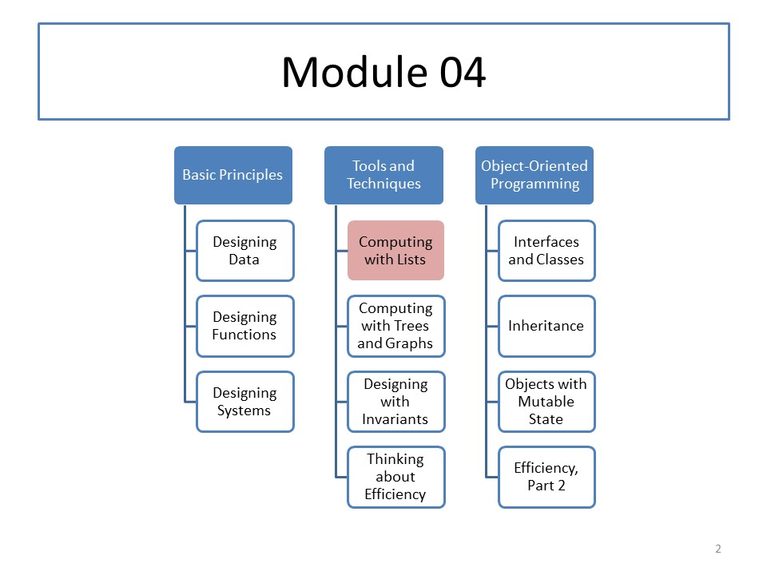

CS 5010: Module 04
Module Overview
This week you will learn about sequence information. You will learn how to represent sequence information as lists, about the list template, and how to write functions that manipulate list data.
Course Map
Readings
Read Part II from the textbook.
Resources
Lessons
- Lesson 4.1: Lists
- Guided Practice 4.1
- Guided Practice 4.2
- Lesson 4.2: Using the Observer Template for List Data
- Lesson 4.3: Lists of Structures
- Guided Practice 4.3
- Lesson 4.4: Non-Empty Lists
Problem Set
Problem Set 04 is due at 6pm local time on Monday, 9 October 2017